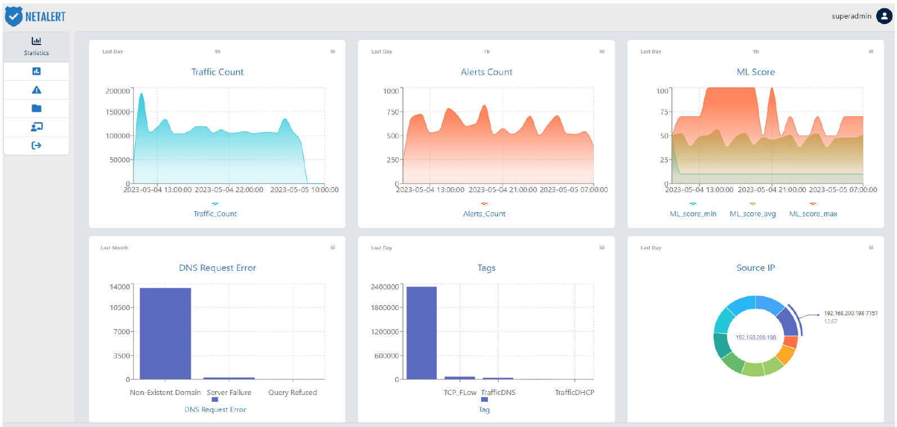
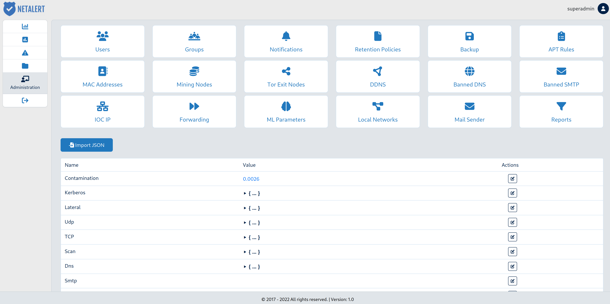
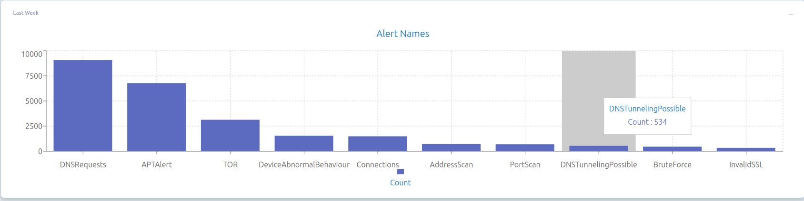

NetAlert – Automatic tools for detecting abnormal behavior in computer networks

News
2023
-
[May'23] -- Dissemination event
in front of prospective users from the private and public sector.
-
[Apr'23] -- Final testing and documentation.
Check out the Netalert datasheet!
-
[Mar'23] -- Intensive testing and bug-fixing.
-
[Feb'23] -- Split the workload on the two servers as designed.
Web server in front, analysis in the back on the GPU beast.
-
[Jan'23] -- Installation is live at the UB datacenter.
2022
-
[Dec'22] -- Finilized the acquisition process for the 5 GPUs
-
[Nov'22] -- Finilized the acquisition process for the two servers; 5 GPUs left
to purchase
-
[Oct'22] -- Netalert used in production at
Cydex'22
-
[Sep'22] -- Milestone reached: Solution validated in laboratory environment (TRL
4)
-
[Aug'22] -- We have a new member, welcome Dr. Nicolae Cleju!
-
[Jul'22] -- Published
On finite termination of an inexact Proximal Point algorithm
in Applied Mathematics Letters.
-
[Jun'22] -- Presented
Unsupervised Abnormal Traffic Detection through Topological Flow Analysis
at COMM'22.
-
[May'22] -- Unsupervised Abnormal Traffic Detection through Topological Flow
Analysis paper preprint available.
-
[Mar'22] -- Milestone reached: Technology concept formulated (TRL2)
-
[Feb'22] -- Started the aquisition process for the two servers
-
[Jan'22] -- We have a new member, welcome Andrei Hîji!
2021
-
[Dec'21] -- Milestone reached: Documentation and identification of solutions
based on existing offers on the profile market
-
[Nov'21] -- I am hiring, apply
here!
-
[Sep'21] -- Kickoff!
Team
Paul Irofti -- Project Coordinator
University of Bucharest:
Paul Irofti -- Principal Investigator
Nicolae Cleju -- Senior Researcher
Andrei Pătrașcu -- Senior Researcher
Cristian Rusu -- Senior Researcher
Andrei Hîji -- Assistant Researcher
Nextgen Software SRL:
Ana-Maria Paraschiv -- Principal Investigator
Vlad Gladin -- Researcher
Bonciu Emilian Cristian -- Researcher
Daniel Tache -- Researcher
Dan Negru -- Researcher
Cristian Valeriu Girlea -- Researcher
Alexandru Cocosila -- Researcher
Adrian Bogdan Sandu -- Technician
Documentation

Papers
|
[1]
|
P. Irofti, A. Pătrașcu, and A.I. Hîji,
“Unsupervised Abnormal Traffic Detection through Topological Flow
Analysis,”
in 2022 14th International Conference on Communications (COMM).
2022, pp. 1--6, IEEE.
[ bib |
DOI |
http ]
|
|
[2]
|
A. Pătrașcu and P. Irofti,
“On finite termination of an inexact Proximal Point algorithm,”
Applied Mathematics Letters, vol. 134, pp. 108348, 2022.
[ bib |
DOI |
http ]
|
About

Goal: NetAlert aims to create a hardware-software sensor solution for detecting anomalies in computer networks based on the monitoring and analysis of data packets.
The network-mounted sensor will provide real-time alerts on abnormal traffic behaviors using two complementary approaches:
(i) static analysis based on rules and behavioral patterns
(ii) machine learning (ML) analysis without prior expert knowledge
Check the set of required
scenarios
and
features (in romanian)
for further technical details of what needs to be accomplished.
Date: 10 September 2021 - 10 May 2023
Lab:
Research Center for Logic, Optimization
and Security (LOS)
![[E-mail address]](images/email.png)